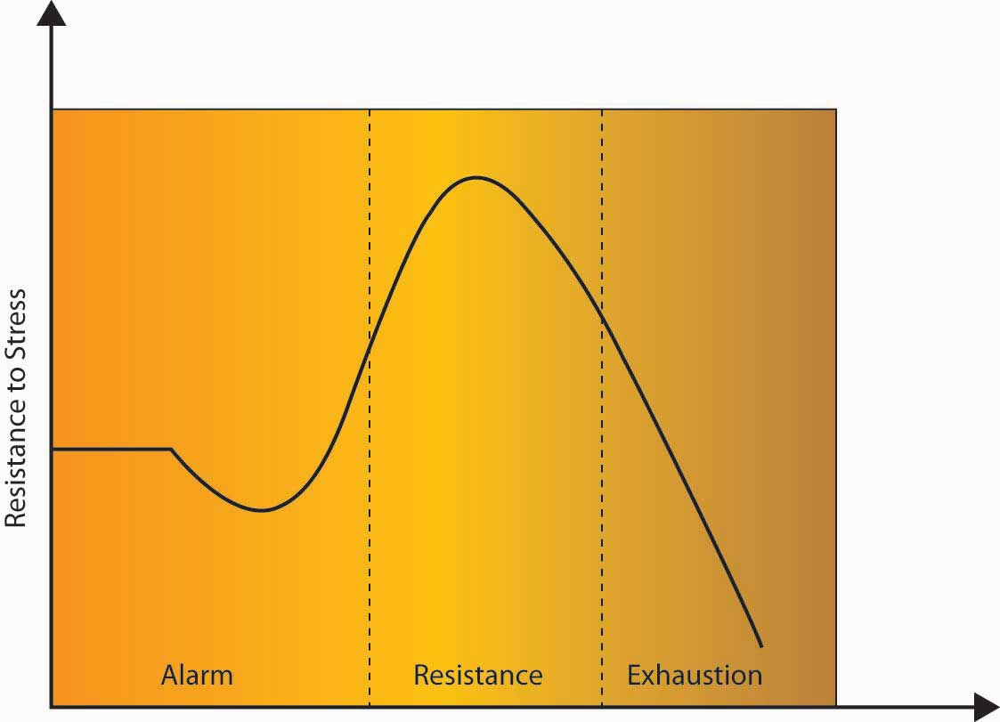

Gravity. Mass. Magnetism. These words come from the physical sciences. And so does the term stress. In its original form, the word stress relates to the amount of force applied to a given area. A steel bar stacked with bricks is being stressed in ways that can be measured using mathematical formulas. In human terms, psychiatrist Peter Panzarino notes, “Stress is simply a fact of nature—forces from the outside world affecting the individual.”Panzarino, P. (2008, February 15). Stress. Retrieved from Medicinenet.com. Retrieved May 21, 2008, from http://www.medicinenet.com/stress/article.htm. The professional, personal, and environmental pressures of modern life exert their forces on us every day. Some of these pressures are good. Others can wear us down over time.
StressThe body’s reaction to a change that requires a physical, mental, or emotional adjustment or response. is defined by psychologists as the body’s reaction to a change that requires a physical, mental, or emotional adjustment or response.Dyer, K. A. (2006). Definition of stress. Retrieved May 21, 2008, from About.com: http://dying.about.com/od/glossary/g/stress_distress.htm. Stress is an inevitable feature of life. It is the force that gets us out of bed in the morning, motivates us at the gym, and inspires us to work.
As you will see in the sections below, stress is a given factor in our lives. We may not be able to avoid stress completely, but we can change how we respond to stress, which is a major benefit. Our ability to recognize, manage, and maximize our response to stress can turn an emotional or physical problem into a resource.
Researchers use polling to measure the effects of stress at work. The results have been eye-opening. According to a 2001 Gallup poll, 80% of American workers report that they feel workplace stress at least some of the time.Kersten, D. (2002, November 12). Get a grip on job stress. USA Today. Retrieved May 21, 2008, from http://www.usatoday.com/money/jobcenter/workplace/stress management/2002-11-12-job-stress_x.htm. Another survey found that 65% of workers reported job stress as an issue for them, and almost as many employees ended the day exhibiting physical effects of stress, including neck pain, aching muscles, and insomnia. It is clear that many individuals are stressed at work.
Our basic human functions, breathing, blinking, heartbeat, digestion, and other unconscious actions, are controlled by our lower brains. Just outside this portion of the brain is the semiconscious limbic system, which plays a large part in human emotions. Within this system is an area known as the amygdala. The amygdalaThe area of the limbic system that controls fear type responses. is responsible for, among other things, stimulating fear responses. Unfortunately, the amygdala cannot distinguish between meeting a 10:00 a.m. marketing deadline and escaping a burning building.
Human brains respond to outside threats to our safety with a message to our bodies to engage in a “fight-or-flight” response.Cannon, W. (1915). Bodily changes in pain, hunger, fear and rage: An account of recent researches into the function of emotional excitement. New York: D. Appleton. Our bodies prepare for these scenarios with an increased heart rate, shallow breathing, and wide-eyed focus. Even digestion and other functions are stopped in preparation for the fight-or-flight response. While these traits allowed our ancestors to flee the scene of their impending doom or engage in a physical battle for survival, most crises at work are not as dramatic as this.
Hans Selye, one of the founders of the American Institute of Stress, spent his life examining the human body’s response to stress. As an endocrinologist who studied the effects of adrenaline and other hormones on the body, Selye believed that unmanaged stress could create physical diseases such as ulcers and high blood pressure, and psychological illnesses such as depression. He hypothesized that stress played a general role in disease by exhausting the body’s immune system and termed this the General Adaptation Syndrome (GAS)Hans Selye’s hypothesis that stress plays a general role in disease by exhausting the body’s immune system..Selye, H. (1946). The general adaptation syndrome and the diseases of adaptation. Journal of Clinical Endocrinology, 6, 117; Selye, H. (1976). Stress of life (Rev. ed.). New York: McGraw-Hill.
Figure 7.2
In Selye’s GAS model, stress affects an individual in three steps: alarm, resistance, and exhaustion.
In the alarm phaseWhen an outside stressor jolts the individual, insisting that something must be done. of stress, an outside stressor jolts the individual, insisting that something must be done. It may help to think of this as the fight-or-flight moment in the individual’s experience. If the response is sufficient, the body will return to its resting state after having successfully dealt with the source of stress.
In the resistance phaseWhen the body begins to release cortisol and draws on fats and sugar to find a way to adjust to the demands of stress., the body begins to release cortisol and draws on reserves of fats and sugars to find a way to adjust to the demands of stress. This reaction works well for short periods of time, but it is only a temporary fix. Individuals forced to endure the stress of cold and hunger may find a way to adjust to lower temperatures and less food. While it is possible for the body to “adapt” to such stresses, the situation cannot continue. The body is drawing on its reserves, like a hospital using backup generators after a power failure. It can continue to function by shutting down unnecessary items like large overhead lights, elevators, televisions, and most computers, but it cannot proceed in that state forever.
In the exhaustion phaseWhen the body has depleted its stores of sugars and fats, and the prolonged release of cortisol has caused the stressor to significantly weaken the individual., the body has depleted its stores of sugars and fats, and the prolonged release of cortisol has caused the stressor to significantly weaken the individual. Disease results from the body’s weakened state, leading to death in the most extreme cases. This eventual depletion is why we’re more likely to reach for foods rich in fat or sugar, caffeine, or other quick fixes that give us energy when we are stressed. Selye referred to stress that led to disease as distress and stress that was enjoyable or healing as eustress.
StressorsEvents or contexts that cause a stress reaction by elevating levels of adrenaline and forcing a physical or mental response. are events or contexts that cause a stress reaction by elevating levels of adrenaline and forcing a physical or mental response. The key to remember about stressors is that they aren’t necessarily a bad thing. The saying “the straw that broke the camel’s back” applies to stressors. Having a few stressors in our lives may not be a problem, but because stress is cumulative, having many stressors day after day can cause a buildup that becomes a problem. The American Psychological Association surveys American adults about their stresses annually. Topping the list of stressful issues are money, work, and housing.American Psychological Association. (2007, October 24). Stress a major health problem in the U.S., warns APA. Retrieved May 21, 2008, from the American Psychological Association Web site: http://www.apa.org/releases/stressproblem.html. But in essence, we could say that all three issues come back to the workplace. How much we earn determines the kind of housing we can afford, and when job security is questionable, home life is generally affected as well.
Understanding what can potentially cause stress can help avoid negative consequences. Now we will examine the major stressors in the workplace.
A major category of workplace stressors are role demands. In other words, some jobs and some work contexts are more potentially stressful than others.
Figure 7.3
George Lucas, one of the most successful filmmakers of all time, found making The Empire Strikes Back stressful both personally and financially. Those who worked with him on those early Star Wars films describe him as fully engrossed in the process, which led to role overload and work–family conflict. Following the making of that film, Lucas said he was “burnt out” and didn’t want to make any more Star Wars films.
Role ambiguityVagueness in relation to our job responsibilities. refers to vagueness in relation to what our responsibilities are. If you have started a new job and felt unclear about what you were expected to do, you have experienced role ambiguity. Having high role ambiguity is related to higher emotional exhaustion, more thoughts of leaving an organization, and lowered job attitudes and performance.Fisher, C. D., & Gittelson, R. (1983). A meta-analysis of the correlates of role conflict and role ambiguity. Journal of Applied Psychology, 68, 320–333; Jackson, S. E., & Shuler, R. S. (1985). A meta-analysis and conceptual critique of research on role ambiguity and role conflict in work settings. Organizational Behavior and Human Decision Processes, 36, 16–78; Örtqvist, D., & Wincent, J. (2006). Prominent consequences of role stress: A meta-analytic review. International Journal of Stress Management, 13, 399–422. Role conflictFacing contradictory demands at work. refers to facing contradictory demands at work. For example, your manager may want you to increase customer satisfaction and cut costs, while you feel that satisfying customers inevitably increases costs. In this case, you are experiencing role conflict because satisfying one demand makes it unlikely to satisfy the other. Role overloadHaving insufficient time and resources to complete one’s job. is defined as having insufficient time and resources to complete a job. When an organization downsizes, the remaining employees will have to complete the tasks that were previously performed by the laid-off workers, which often leads to role overload. Like role ambiguity, both role conflict and role overload have been shown to hurt performance and lower job attitudes; however, research shows that role ambiguity is the strongest predictor of poor performance.Gilboa, S., Shirom, A., Fried, Y., & Cooper, C. (2008). A meta-analysis of work demand stressors and job performance: Examining main and moderating effects. Personnel Psychology, 61, 227–271; Tubre, T. C., & Collins, J. M. (2000). Jackson and Schuler (1985) Revisited: A meta-analysis of the relationships between role ambiguity, role conflict, and performance. Journal of Management, 26, 155–169. Research on new employees also shows that role ambiguity is a key aspect of their adjustment, and that when role ambiguity is high, new employees struggle to fit into the new organization.Bauer, T. N., Bodner, T., Erdogan, B., Truxillo, D. M., & Tucker, J. S. (2007). Newcomer adjustment during organizational socialization: A meta-analytic review of antecedents, outcomes, and methods. Journal of Applied Psychology, 92, 707–721.
Messages reach us in countless ways every day. Some are societal—advertisements that we may hear or see in the course of our day. Others are professional—e-mails, memos, voice mails, and conversations from our colleagues. Others are personal—messages and conversations from our loved ones and friends. Add these together and it’s easy to see how we may be receiving more information than we can take in. This state of imbalance is known as information overloadInformation processing demands that exceed the supply or capacity of time available for such processing., which can be defined as “occurring when the information processing demands on an individual’s time to perform interactions and internal calculations exceed the supply or capacity of time available for such processing.”Schick, A. G., Gordon, L. A., & Haka, S. (1990). Information overload: A temporal approach. Accounting, organizations, and society, 15, 199–220. Role overload has been made much more salient because of the ease at which we can get abundant information from Web search engines and the numerous e-mail and text messages we receive each day.Definition of information overload available at PCMag.com. Retrieved May 21, 2008, from http://www.pcmag.com/encyclopedia_term/0,2542,t=information+overload &i=44950,00.asp; Additional information can be found in Dawley, D. D., & Anthony, W. P. (2003). User perceptions of e-mail at work. Journal of Business and Technical Communication, 17, 170–200. Other research shows that working in such a fragmented fashion significantly impacts efficiency, creativity, and mental acuity.Based on Overholt, A. (2001, February). Intel’s got (too much) mail. Fast Company. Retrieved May 22, 2008, from http://www.fastcompany.com/online/44/intel.html and http://blogs.intel.com/it/2006/10/information_overload.php.
As you can see, some of these jobs are stressful due to high emotional labor (customer service), physical demands (miner), time pressures (journalist), or all three (police officer).
Source: Tolison, B. (2008, April 7). Top ten most stressful jobs. Health. Retrieved January 28, 2009, from the WCTV News Web site: http://www.wctv.tv/news/headlines/17373899.html.
Work–family conflictWhen the demands from one’s work and family are negatively affecting one another. occurs when the demands from work and family are negatively affecting one another.Netemeyer, R. G., Boles, J. S., & McMurrian, R. (1996). Development and validation of work–family conflict and family–work conflict scales. Journal of Applied Psychology, 81, 400–410. Specifically, work and family demands on a person may be incompatible with each other such that work interferes with family life and family demands interfere with work life. This stressor has steadily increased in prevalence, as work has become more demanding and technology has allowed employees to work from home and be connected to the job around the clock. In fact, a recent census showed that 28% of the American workforce works more than 40 hours per week, creating an unavoidable spillover from work to family life.U.S. Census Bureau. (2004). Labor Day 2004. Retrieved May 22, 2008, from the U.S. Census Bureau Web site: http://www.census.gov/press-release/www/releases/archives/facts_for_features_special_editions/002264.html. Moreover, the fact that more households have dual-earning families in which both adults work means household and childcare duties are no longer the sole responsibility of a stay-at-home parent. This trend only compounds stress from the workplace by leading to the spillover of family responsibilities (such as a sick child or elderly parent) to work life. Research shows that individuals who have stress in one area of their life tend to have greater stress in other parts of their lives, which can create a situation of escalating stressors.Allen, T. D., Herst, D. E. L., Bruck, C. S., & Sutton, M. (2000). Consequences associated with work-to-family conflict: A review and agenda for future research. Journal of Occupational Health Psychology, 5, 278–308; Ford, M. T., Heinen, B. A., & Langkamer, K. L. (2007). Work and family satisfaction and conflict: A meta-analysis of cross-domain relations. Journal of Applied Psychology, 92, 57–80; Frone, M. R., Russell, R., & Cooper, M. L. (1992). Antecedents and outcomes of work–family conflict: Testing a model of the work–family interface. Journal of Applied Psychology, 77, 65–78; Hammer, L. B., Bauer, T. N., & Grandey, A. A. (2003). Work–family conflict and work–related withdrawal behaviors. Journal of Business & Psychology, 17, 419–436.
Work–family conflict has been shown to be related to lower job and life satisfaction. Interestingly, it seems that work–family conflict is slightly more problematic for women than men.Kossek, E. E., & Ozeki, C. (1998). Work–family conflict, policies, and the job–life satisfaction relationship: A review and directions for organizational behavior–human resources research. Journal of Applied Psychology, 83, 139–149. Organizations that are able to help their employees achieve greater work–life balance are seen as more attractive than those that do not.Barnett, R. C., & Hall, D. T. (2001). How to use reduced hours to win the war for talent. Organizational Dynamics, 29, 192–210; Greenhaus, J. H., & Powell, G. (2006). When work and family are allies: A theory of work–family enrichment. Academy of Management Review, 31, 72–92. Organizations can help employees maintain work–life balance by using organizational practices such as flexibility in scheduling as well as individual practices such as having supervisors who are supportive and considerate of employees’ family life.Thomas, L. T., & Ganster, D. C. (1995). Impact of family-supportive work variables on work–family conflict and strain: A control perspective. Journal of Applied Psychology, 80, 6–15.
Stress can result from positive and negative life changes. The Holmes-Rahe scale ascribes different stress values to life events ranging from the death of one’s spouse to receiving a ticket for a minor traffic violation. The values are based on incidences of illness and death in the 12 months after each event. On the Holmes-Rahe scale, the death of a spouse receives a stress rating of 100, getting married is seen as a midway stressful event, with a rating of 50, and losing one’s job is rated as 47. These numbers are relative values that allow us to understand the impact of different life events on our stress levels and their ability to impact our health and well-being.Fontana, D. (1989). Managing stress. Published by the British Psychology Society and Routledge. Again, because stressors are cumulative, higher scores on the stress inventory mean you are more prone to suffering negative consequences of stress than someone with a lower score.
Read each of the events listed below. Give yourself the number of points next to any event that has occurred in your life in the last 2 years. There are no right or wrong answers. The aim is just to identify which of these events you have experienced.
Table 7.1 Sample Items: Life Events Stress Inventory
| Life event | Stress points | Life event | Stress points |
|---|---|---|---|
| Death of spouse | 100 | Foreclosure of mortgage or loan | 30 |
| Divorce | 73 | Change in responsibilities at work | 29 |
| Marital separation | 65 | Son or daughter leaving home | 29 |
| Jail term | 63 | Trouble with in-laws | 29 |
| Death of close family member | 63 | Outstanding personal achievement | 28 |
| Personal injury or illness | 53 | Begin or end school | 26 |
| Marriage | 50 | Change in living location/condition | 25 |
| Fired or laid off at work | 47 | Trouble with supervisor | 23 |
| Marital reconciliation | 45 | Change in work hours or conditions | 20 |
| Retirement | 45 | Change in schools | 20 |
| Pregnancy | 40 | Change in social activities | 18 |
| Change in financial state | 38 | Change in eating habits | 15 |
| Death of close friend | 37 | Vacation | 13 |
| Change to different line of work | 36 | Minor violations of the law | 11 |
Scoring:
The happy events in this list such as getting married or an outstanding personal achievement illustrate how eustress, or “good stress,” can also tax a body as much as the stressors that constitute the traditionally negative category of distress. (The prefix eu- in the word eustress means “good” or “well,” much like the eu- in euphoria.) Stressors can also occur in trends. For example, during 2007, nearly 1.3 million U.S. housing properties were subject to foreclosure activity, up 79% from 2006.
Source: Adapted from Holmes, T. H., & Rahe, R. H. (1967). The social readjustment rating scale. Journal of Psychosomatic Research, 11, 213–218.
A study commissioned by the U.S. Department of Labor to examine over 3,600 companies from 1980 to 1994 found that manufacturing firms accounted for the greatest incidence of major downsizings. The average percentage of firms by industry that downsized more than 5% of their workforces across the 15-year period of the study was manufacturing (25%), retail (17%), and service (15%). A total of 59% of the companies studied fired at least 5% of their employees at least once during the 15-year period, and 33% of the companies downsized more than 15% of their workforce at least once during the period. Furthermore, during the recessions in 1985 to 1986 and 1990 to 1991, more than 25% of all firms, regardless of size, cut their workforce by more than 5%.Slocum, J. W., Morris, J. R., Cascio, W. F., & Young, C. E. (1999). Downsizing after all these years: Questions and answers about who did it, how many did it, and who benefited from it. Organizational Dynamics, 27, 78–88. In the United States, major layoffs in many sectors in 2008 and 2009 were stressful even for those who retained their jobs.
The loss of a job can be a particularly stressful event, as you can see by its high score on the life stressors scale. It can also lead to other stressful events, such as financial problems, which can add to a person’s stress score. Research shows that downsizing and job insecurity (worrying about downsizing) is related to greater stress, alcohol use, and lower performance and creativity.Moore, S., Grunberg, L., & Greenberg, E. (2004). Repeated downsizing contact: The effects of similar and dissimilar layoff experiences on work and well-being outcomes. Journal of Occupational Health Psychology, 9, 247–257; Probst, T. M., Stewart, S. M., Gruys, M. L., & Tierney, B. W. (2007). Productivity, counterproductivity and creativity: The ups and downs of job insecurity. Journal of Occupational and Organizational Psychology, 80, 479–497; Sikora, P., Moore, S., Greenberg, E., & Grunberg, L. (2008). Downsizing and alcohol use: A cross-lagged longitudinal examination of the spillover hypothesis. Work & Stress, 22, 51–68. For example, a study of over 1,200 Finnish workers found that past downsizing or expectations of future downsizing was related to greater psychological strain and absence.Kalimo, R., Taris, T. W., & Schaufeli, W. B. (2003). The effects of past and anticipated future downsizing on survivor well-being: An Equity perspective. Journal of Occupational Health Psychology, 8, 91–109. In another study of creativity and downsizing, researchers found that creativity and most creativity-supporting aspects of the perceived work environment declined significantly during the downsizing.Amabile, T. M., & Conti, R. (1999). Changes in the work environment for creativity during downsizing. Academy of Management Journal, 42, 630–640. Those who experience layoffs but have their self-integrity affirmed through other means are less susceptible to negative outcomes.Wiesenfeld, B. M., Brockner, J., Petzall, B., Wolf, R., & Bailey, J. (2001). Stress and coping among layoff survivors: A self-affirmation analysis. Anxiety, Stress & Coping: An International Journal, 14, 15–34.
The outcomes of stress are categorized into physiological and psychological and work outcomes.
Stress manifests itself internally as nervousness, tension, headaches, anger, irritability, and fatigue. Stress can also have outward manifestations. Dr. Dean Ornish, author of Stress, Diet and Your Heart, says that stress is related to aging.Ornish, D. (1984). Stress, diet and your heart. New York: Signet. Chronic stress causes the body to secrete hormones such as cortisol, which tend to make our complexion blemished and cause wrinkles. Harvard psychologist Ted Grossbart, author of Skin Deep, says, “Tens of millions of Americans suffer from skin diseases that flare up only when they’re upset.”Grossbart, T. (1992). Skin deep. New Mexico: Health Press. These skin problems include itching, profuse sweating, warts, hives, acne, and psoriasis. For example, Roger Smith, the former CEO of General Motors Corporation, was featured in a Fortune article that began, “His normally ruddy face is covered with a red rash, a painless but disfiguring problem which Smith says his doctor attributes 99% to stress.”Taylor, A. (1987, August 3). The biggest bosses. Fortune. Retrieved May 23, 2008, from http://money.cnn.com/magazines/fortune/fortune_archive/1987/08/03/69388/index.htm.
The human body responds to outside calls to action by pumping more blood through our system, breathing in a more shallow fashion, and gazing wide-eyed at the world. To accomplish this feat, our bodies shut down our immune systems. From a biological point of view, it’s a smart strategic move—but only in the short term. The idea can be seen as your body wanting to escape an imminent threat, so that there is still some kind of body around to get sick later. But in the long term, a body under constant stress can suppress its immune system too much, leading to health problems such as high blood pressure, ulcers, and being overly susceptible to illnesses such as the common cold.
The link between heart attacks and stress, while easy to assume, has been harder to prove. The American Heart Association notes that research has yet to link the two conclusively. Regardless, it is clear that individuals under stress engage in behaviors that can lead to heart disease such as eating fatty foods, smoking, or failing to exercise.
Depression and anxiety are two psychological outcomes of unchecked stress, which are as dangerous to our mental health and welfare as heart disease, high blood pressure, and strokes. The Harris poll found that 11% of respondents said their stress was accompanied by a sense of depression. “Persistent or chronic stress has the potential to put vulnerable individuals at a substantially increased risk of depression, anxiety, and many other emotional difficulties,” notes Mayo Clinic psychiatrist Daniel Hall-Flavin. Scientists have noted that changes in brain function—especially in the areas of the hypothalamus and the pituitary gland—may play a key role in stress-induced emotional problems.Mayo Clinic Staff. (2008, February 26). Chronic stress: Can it cause depression? Retrieved May 23, 2008, from the Mayo Clinic Web site: http://www.mayoclinic.com/health/stress/AN01286.
Stress is related to worse job attitudes, higher turnover, and decreases in job performance in terms of both in-role performance and organizational citizenship behaviors.Mayo Clinic Staff. (2008, February 26). Chronic stress: Can it cause depression? Retrieved May 23, 2008, from the Mayo Clinic Web site: http://www.mayoclinic.com/health/stress/AN01286; Gilboa, S., Shiron, A., Fried, Y., & Cooper, C. (2008). A meta-analysis of work demand stressors and job performance: Examining main and moderating effects. Personnel Psychology, 61, 227–271; Podsakoff, N. P., LePine, J. A., & LePine, M. A. (2007). Differential challenge stressor-hindrance stressor relationships with job attitudes, turnover intentions, turnover, and withdrawal behavior: A meta-analysis. Journal of Applied Psychology, 92, 438–454. Research also shows that stressed individuals have lower organizational commitment than those who are less stressed.Cropanzano, R., Rupp, D. E., & Byrne, Z. S. (2003). The relationship of emotional exhaustion to work attitudes, job performance, and organizational citizenship behaviors. Journal of Applied Psychology, 88, 160–169. Interestingly, job challenge has been found to be related to higher performance, perhaps with some individuals rising to the challenge.Podsakoff, N. P., LePine, J. A., & LePine, M. A. (2007). Differential challenge stressor-hindrance stressor relationships with job attitudes, turnover intentions, turnover, and withdrawal behavior: A meta-analysis. Journal of Applied Psychology, 92, 438–454. The key is to keep challenges in the optimal zone for stress—the activation stage—and to avoid the exhaustion stage.Quick, J. C., Quick, J. D., Nelson, D. L., & Hurrell, J. J. (1997). Preventative stress management in organizations. Washington, DC: American Psychological Association.
Figure 7.4

Individuals who are able to find the right balance between work that is too challenging and work that is not challenging enough see increases in performance.
How we handle stress varies by individual, and part of that issue has to do with our personality type. Type A personalitiesPeople who display high levels of speed/impatience, job involvement, and hard-driving competitiveness., as defined by the Jenkins Activity Survey,Jenkins, C. D., Zyzanski, S., & Rosenman, R. (1979). Jenkins activity survey manual. New York: Psychological Corporation. display high levels of speed/impatience, job involvement, and hard-driving competitiveness. If you think back to Selye’s General Adaptation Syndrome, in which unchecked stress can lead to illness over time, it’s easy to see how the fast-paced, adrenaline-pumping lifestyle of a Type A person can lead to increased stress, and research supports this view.Spector, P. E., & O’Connell, B. J. (1994). The contribution of personality traits, negative affectivity, locus of control and Type A to the subsequent reports of job stressors and job strains. Journal of Occupational and Organizational Psychology, 67, 1–11. Studies show that the hostility and hyper-reactive portion of the Type A personality is a major concern in terms of stress and negative organizational outcomes.Ganster, D. C. (1986). Type A behavior and occupational stress. Journal of Organizational Behavior Management, 8, 61–84.
Type B personalitiesPeople who tend to be calmer than Type A people, and tend to think through situations as opposed to reacting emotionally., by contrast, are calmer by nature. They think through situations as opposed to reacting emotionally. Their fight-or-flight and stress levels are lower as a result. Our personalities are the outcome of our life experiences and, to some degree, our genetics. Some researchers believe that mothers who experience a great deal of stress during pregnancy introduce their unborn babies to high levels of the stress-related hormone cortisol in utero, predisposing their babies to a stressful life from birth.BBC News. (2007, January 26). Stress “harms brain in the womb.” Retrieved May 23, 2008, from http://news.bbc.co.uk/2/hi/health/6298909.stm.
Men and women also handle stress differently. Researchers at Yale University discovered estrogen may heighten women’s response to stress and their tendency to depression as a result.Weaver, J. (2004, January 21). Estrogen makes the brain more vulnerable to stress. Yale University Medical News. Retrieved May 23, 2008, from http://www.eurekalert.org/pub_releases/2004-01/yu-emt012104.php. Still, others believe that women’s stronger social networks allow them to process stress more effectively than men.Personality types impact on response to stress. (n.d.). Retrieved June 5, 2008, from the Discovery Health Web site: http://health.discovery.com/centers/stress/articles/pnstress/pnstress.html. So while women may become depressed more often than men, women may also have better tools for countering emotion-related stress than their male counterparts.
As we all know, stress can build up. Advice that’s often given is to "let it all out" with something like a cathartic "good cry." But research shows that crying may not be as helpful as the adage would lead us to believe. In reviewing scientific studies done on crying and health, Ad Vingerhoets and Jan Scheirs found that the studies “yielded little evidence in support of the hypothesis that shedding tears improves mood or health directly, be it in the short or in the long run.” Another study found that venting actually increased the negative effects of negative emotion.Brown, S. P., Westbrook, R. A., & Challagalla, G. (2005). Good cope, bad cope: Adaptive and maladaptive coping strategies following a critical negative work event. Journal of Applied Psychology, 90, 792–798.
Instead, laughter may be the better remedy. Crying may actually intensify the negative feelings, because crying is a social signal not only to others but to yourself. “You might think, ‘I didn’t think it was bothering me that much, but look at how I’m crying—I must really be upset,’” says Susan Labott of the University of Toledo. The crying may make the feelings more intense. Labott and Randall Martin of Northern Illinois University at Dekalb surveyed 715 men and women and found that at comparable stress levels, criers were more depressed, anxious, hostile, and tired than those who wept less. Those who used humor were the most successful at combating stress. So, if you’re looking for a cathartic release, opt for humor instead: Try to find something funny in your stressful predicament.
Sources: Vingerhoets, A. J. J. M., & Scheirs, J. G. M. (2001). Crying and health. In A. J. J. M. Vingerhoets & R. R. Cornelius (Eds.), Adult crying: A biopsychosocial approach (pp. 227–247). East Sussex, UK: Brunner-Routledge; Martin, R., & Susan L. (1991). Mood following emotional crying: Effects of the situation. Journal of Research in Personality, 25(2), 218–233; Bostad, R. The crying game. Anchor Point, 1–8. Retrieved June 19, 2008, from http://www.nlpanchorpoint.com/BolstadCrying1481.pdf
Stress is prevalent in today’s workplaces. The General Adaptation Syndrome consists of alarm, resistance, and eventually exhaustion if the stress goes on for too long. Time pressure is a major stressor. Outcomes of stress include both psychological and physiological problems as well as work outcomes. Individuals with Type B personalities are less prone to stress. In addition, individuals with social support experience less stress.


{kind=link}